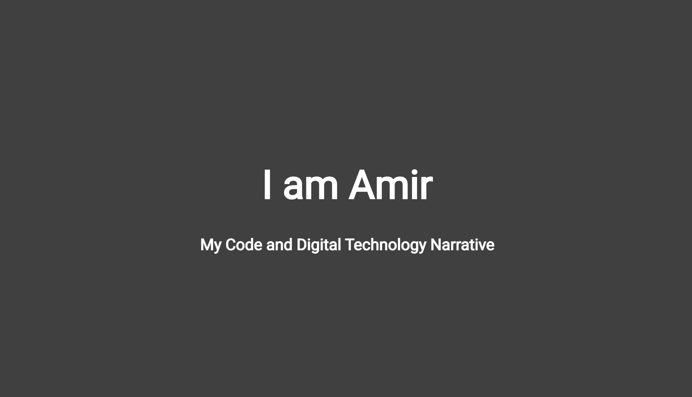
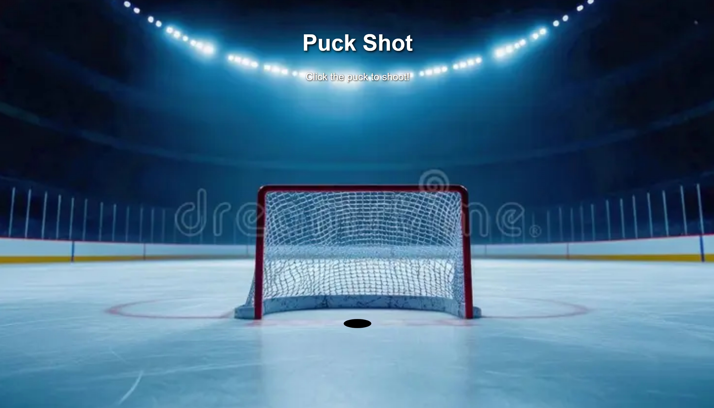
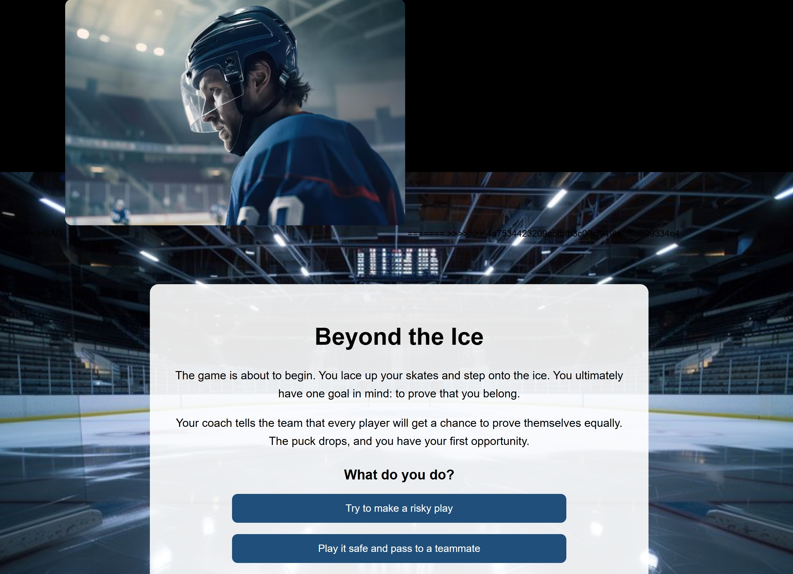

Introduction to Code
This was my first assignment, where I learned how to use Visual Studio Code and the basics of writing code to build a digital project.
View ProjectComposing Digital Media Portfolio
My first projects introduced me to digital composition through coding, interactive design, and storytelling. I used hockey as a subject to experiment with the tools and possibilities of new media.

This was my first assignment, where I learned how to use Visual Studio Code and the basics of writing code to build a digital project.
View Project
For this assignment, I created a simple interactive game where the user taps to shoot a hockey puck toward the net.
Play Game
I created an interactive story about a hockey player, using choices and digital storytelling to shape the experience.
Explore StoryTechnology plays a crucial role in creating digital media, enabling different and new forms of expression. Tools such as coding environments and design software allow people to develop what they imagine. I experimented with code and images, learning how to make buttons do different things and lead users to different pages or outcomes. This is how I was able to make simple games and stories about something I enjoy: hockey.
Experimentation is key to creating innovative digital media. By trying new techniques and learning different editing tactics, I pushed my boundaries and discovered new ways of creating through these first three assignments. I began to understand the potential of code and design tools and used them to create interactive games and engaging stories.
The workshops were crucial to my understanding of code. Whenever I had an issue, I asked my friend Navaj or other group members how they solved similar problems. Some questions required collaboration rather than a simple Google search. The feedback and examples my peers shared also motivated me to try new things in my own assignments.
Revision is an essential part of the creative process. By reviewing and refining my work with my teachers, classmates, and other resources, I improved my projects and developed ideas I had not considered at first. For example, I initially could not get the puck to shoot where I wanted, so I submitted a version that did not fully match my idea. After getting help and revising it, I was able to make the game closer to what I had imagined.
Presenting my work to a small group and to the entire class taught me to explain my ideas and creative decisions. Showing my classmates my game and story helped me feel like a creator and made me more confident discussing how I approached an assignment. Putting my work on display felt rewarding and made me proud of what I had made.
These projects expanded my work beyond coding into sound recording, audio storytelling, and the relationship between photographs, text, and memory.
This sound composition brings together everyday sounds from the Oakland campus, including typing, footsteps, a trolley, a zipper, eating, drinking water, and a car horn. I arranged and edited these recordings in Audacity to create a short sound piece from ordinary moments.
Listen on SoundCloudThis podcast explores a question I was unsure about. The assignment gave me a chance to investigate the topic, consider at least two possible answers or perspectives, and document the process of exploring the question through audio.
Listen on SoundCloudThis two-page, black-and-white collage uses photographs of hockey players, equipment, and the rink alongside writing and quotations from Roland Barthes’s Camera Lucida. It considers how photographs connect to memory and identity, and what an image cannot show about the experience behind it.
View Collage PDFI am leaving this section open so I can complete my own responses to the second set of course-goal questions.